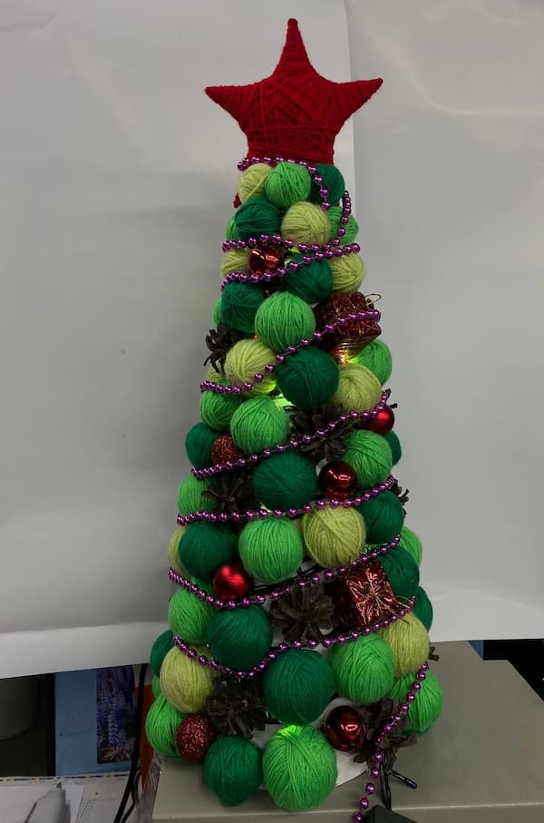
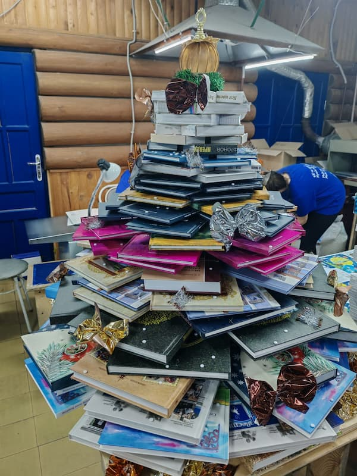
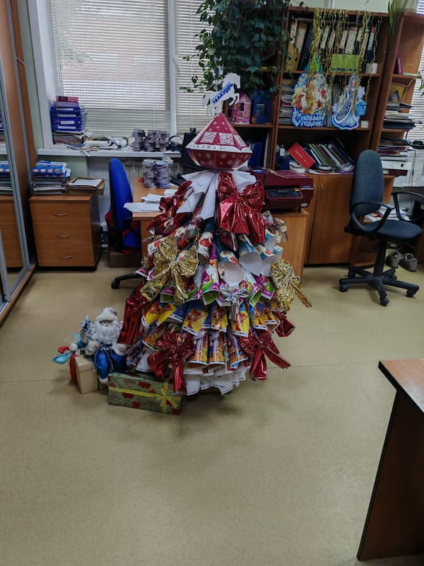
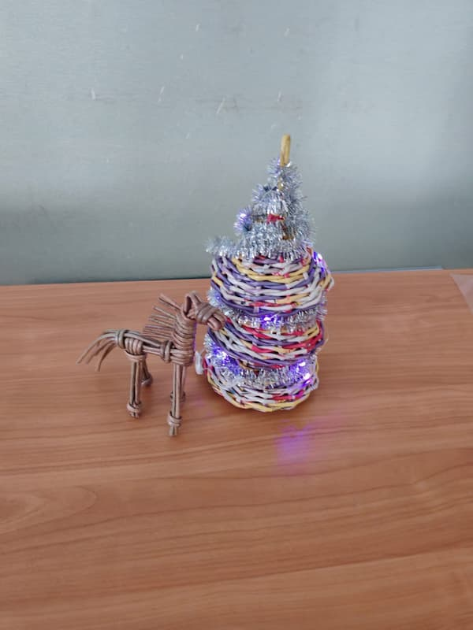
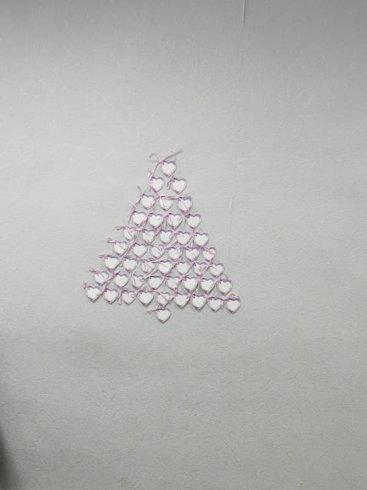

Волшебство своими руками: в «Лазури» прошел конкурс корпоративных ёлок!
Типография «Лазурь» славится не только качеством печати, но и творческим духом своего коллектива. Накануне Нового года это проявилось в полной мере — у нас впервые прошел конкурс на лучшую корпоративную новогоднюю елку! Цеха и отделы превратились в мастерские дизайнеров, а вместо привычных игрушек в ход пошли самые неожиданные «профессиональные» материалы.
Участники и их творения:
В состязании приняли участие шесть команд, представивших в общей сложности семь неповторимых красавиц! Боролись за звание лучших:
-
Бухгалтерия: Их ёлка, вероятно, была самой точной и сбалансированной!
-
Бригада переплетного цеха: Здесь ждали работу, креативность которой не знала
границ.

-
Бригада твердого переплета: Мастера прочных крышек и корешков наверняка
удивили нас надежной и фундаментальной конструкцией.

-
Менеджеры: От них ждали стратегически выверенного и яркого дизайна.
-
Планово-технологический отдел (ПТО): Отличились особой активностью,
представив на суд жюри целых три авторские ёлки! Видимо, технологический подход позволил
оптимизировать и процесс праздничного творчества.



И победитель — Отдел кадров!
По итогам голосования победителем конкурса с большим отрывом был признан Отдел кадров! Их ёлка, которую можно смело назвать «Ёлкой дружного коллектива», поразила сердца всех членов жюри и сотрудников. В ней сочетались тепло, душевность и невероятное внимание к деталям, что, впрочем, неудивительно для отдела, который является сердцем нашей компании. Поздравляем победителей с заслуженной наградой!

Хотя победила одна команда, проигравших в этом празднике не было. Главный приз для всех — это всеобщее восхищение, море улыбок и то неповторимое предновогоднее настроение, которое теперь царит во всех уголках нашей типографии.
Этот конкурс наглядно показал, что наши сотрудники талантливы во всем: они не только виртуозно управляют станками и решают сложные задачи, но и умеют создавать красоту, заряжать друг друга позитивом и вместе творить маленькое чудо.
Спасибо всем участникам за вашу фантазию, труд и праздничный дух!
Такие традиции делают нашу «Лазурь» не просто местом работы, а настоящей творческой семьей. С наступающим Новым годом! Пусть 2026-й будет ярким, успешным и таким же креативным, как наши новогодние елки!